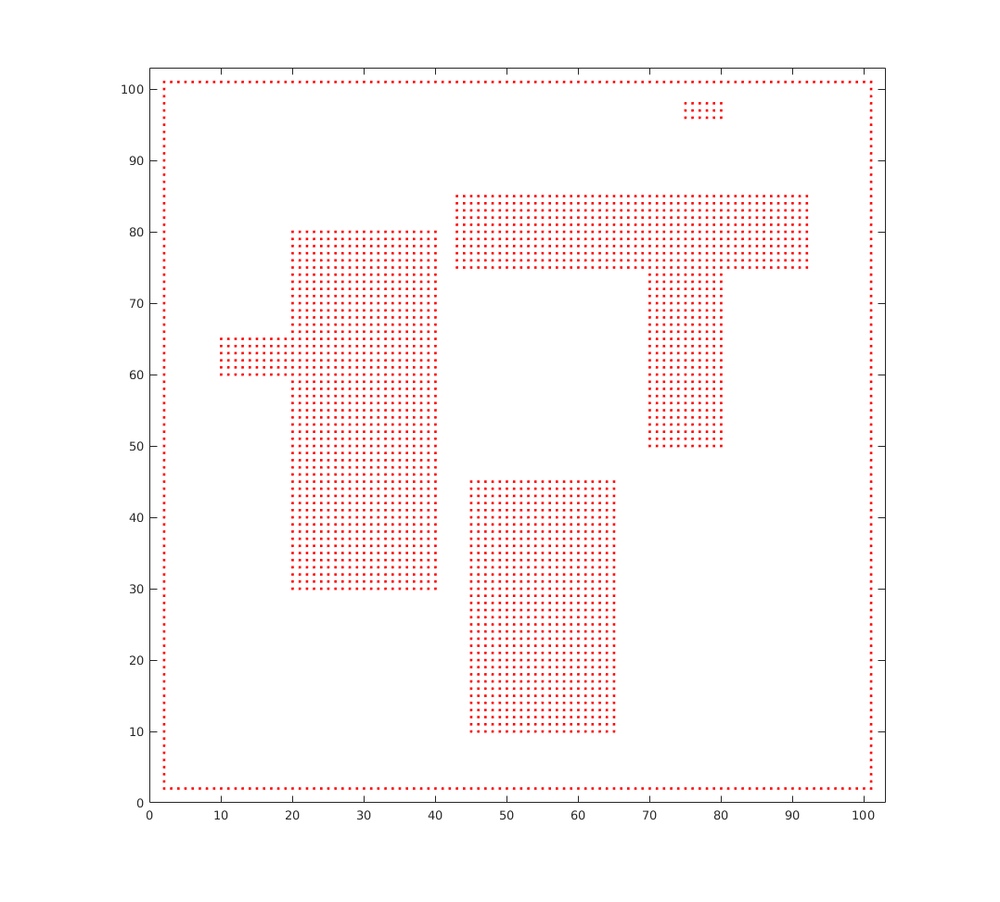
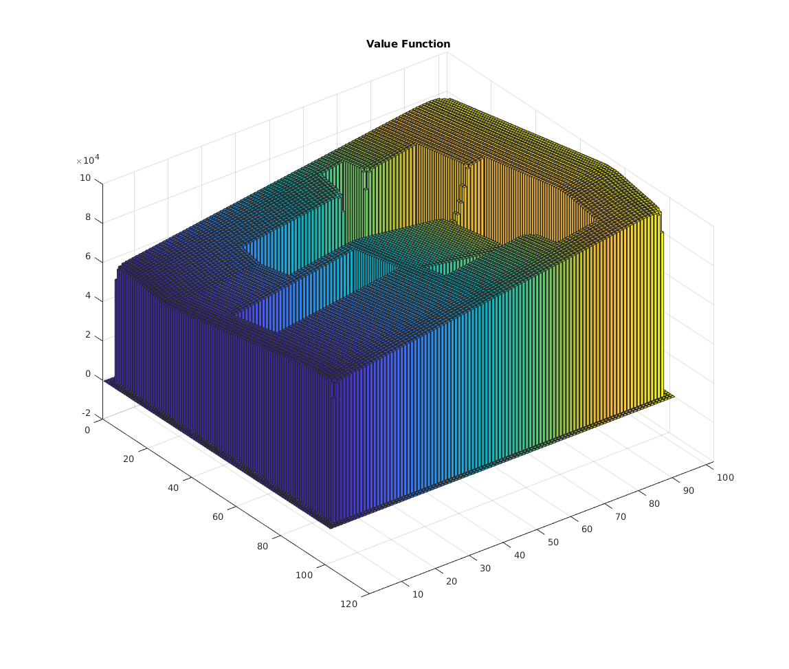
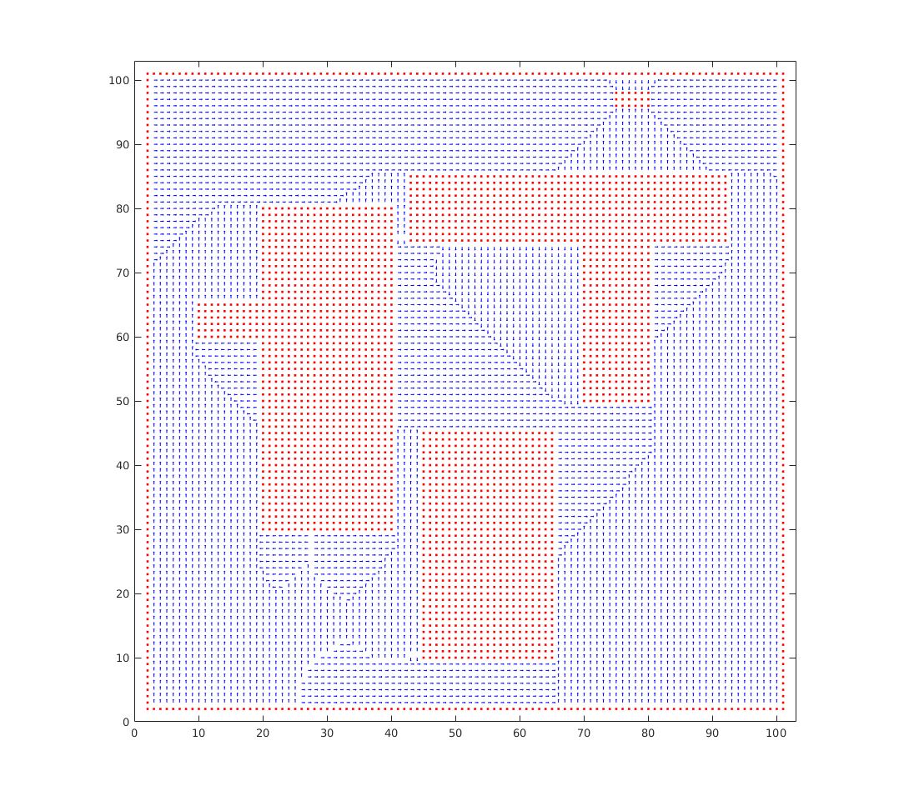
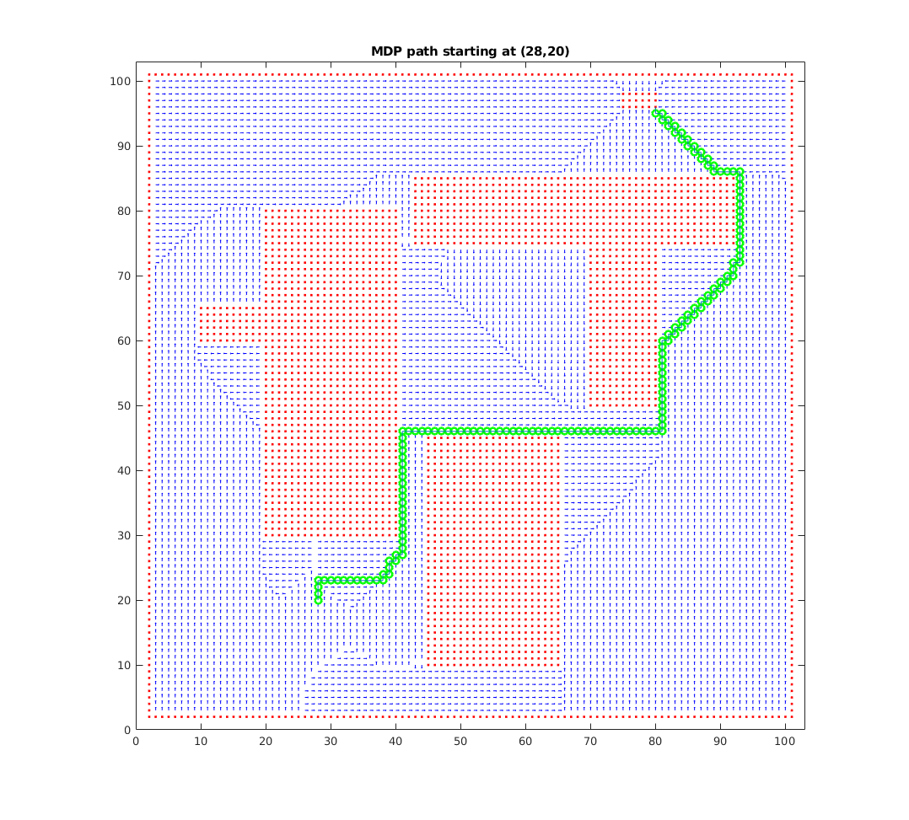

Contents
clear;
N = 100;
Np = 100 + 2;
map = zeros(Np,Np);
walls = zeros(Np,Np);
obs1 = zeros(Np,Np);
obs2 = zeros(Np,Np);
obs3 = zeros(Np,Np);
goal = zeros(Np,Np);
walls(2,2:N) = -100;
walls(2:N+1,2) = -100;
walls(N+1,2:N+1) = -100;
walls(2:N+1,N+1) = -100;
obs1(20:40,30:80) = -5000;
obs1(10:20,60:65) = -5000;
obs2(45:65,10:45) = -5000;
obs3(43:92,75:85) = -5000;
obs3(70:80,50:75) = -5000;
goal(75:80,96:98) = 100000;
map = walls + obs1 + obs2 + obs3 + goal;
obstacle = map;
[Mm,Nm] = size(map);
xm = [];
ym = [];
for i = 1:Mm
for j = 1:Nm
if map(i,j)
xm = [xm i];
ym = [ym j];
end
end
end
figure(1); clf;
plot(xm,ym,'.r');
axis([0 Np+1 0 Np+1]);
axis('square');

DETERMINE VALUE FUNCTION
p_nn = .8;
p_ne = .1;
p_nw = .1;
gamma = 1;
diff = 50000;
R = map-200;
for i=1:Np
for j = 1:Np
V(i,j) = map(i,j);
end
end
V_old = 0;
while diff > 100
for i = 3:Np-2
for j = 3:Np-2
if obstacle(i,j) ~= 0
else
V_E = V(i+1,j)*p_nn+V(i,j+1)*p_nw+V(i,j-1)*p_ne;
V_S = V(i,j-1)*p_nn+V(i+1,j)*p_nw+V(i-1,j)*p_ne;
V_W = V(i-1,j)*p_nn+V(i,j-1)*p_nw+V(i,j+1)*p_ne;
V_N = V(i,j+1)*p_nn+V(i-1,j)*p_nw+V(i+1,j)*p_ne;
Vs = [V_N,V_E,V_S,V_W];
V(i,j) = gamma*max(Vs)+R(i,j);
end
end
end
diff = abs(sum(sum(V_old))-sum(sum(V)));
V_old = V;
end
figure(2);clf
bar3(V)
title ('Value Function')

DETERMINE POLICY
for i = 3:Np-2
for j = 3:Np-2
if obstacle(i,j) ~= 0
else
dir = [V(i+1,j),V(i,j+1),V(i-1,j),V(i,j-1)];
[foo pol(i,j)] = max(dir);
end
end
end
PLOT POLICY
figure(1);
hold on
for i = 3:Np-2
for j = 3:Np-2
if obstacle(i,j) ~= 0
else
if pol(i,j) == 1
dir = -pi/2;
elseif pol(i,j) == 2
dir = 0;
elseif pol(i,j) == 3
dir = pi/2;
elseif pol(i,j) == 4
dir = pi;
end
draw_arrow(i,j,.5,dir)
end
end
end

PLOT PATH
i=1;
path = [28,20];
while ((path(i,1) < 75 || path(i,1) > 80) || (path(i,2)<96 || path(i,2)>98))
if pol(path(i,1),path(i,2)) == 1
path = [path;[path(i,1)+1,path(i,2)]];
elseif pol(path(i,1),path(i,2)) == 2
path = [path;[path(i,1),path(i,2)+1]];
elseif pol(path(i,1),path(i,2)) == 3
path = [path;[path(i,1)-1,path(i,2)]];
elseif pol(path(i,1),path(i,2)) == 4
path = [path;[path(i,1),path(i,2)-1]];
end
plot(path(i,1),path(i,2),'og','LineWidth',2)
i = i+1;
end
plot (path(:,1),path(:,2))
title('MDP path starting at (28,20)')
